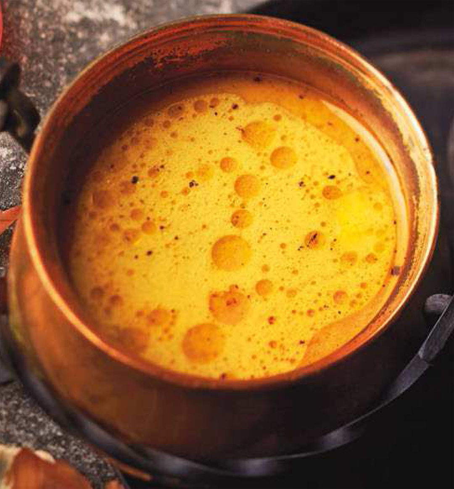

Odin Recipes: Red Dragon Inn Fiery Broth

Listing of ingredients
- 1 Onion
- 3 Garlic Cloves
- 2 celery stocks
- 1/2 oz fresh ginger root
- 1 3/4 oz coconut milk
- 2pt chicken broth
- 1 small tin tomato paste
- 1 T curry powder
- 4 cornichons (baby pickeled cucumber
- salt and pepper
- Tabasco sauce, to taste
Preperation Steps
- Peel the onion, garlic, celery, and ginger.Cut them into large put them in a sauce pan, to which you will add the coconut milk, chicken broth, tomato paster, curry powder, and cornichons.
- Mixtogether well and bring to a boil. Simmer and reduce for about 45 minutes. Taste and season.
- Strain soup through a strainer, then through a cloth to obtain a very clear broth. Taste, adjust the seasoning if necessary, and add Tabasco sauce to taste
- Serve steaming hot.